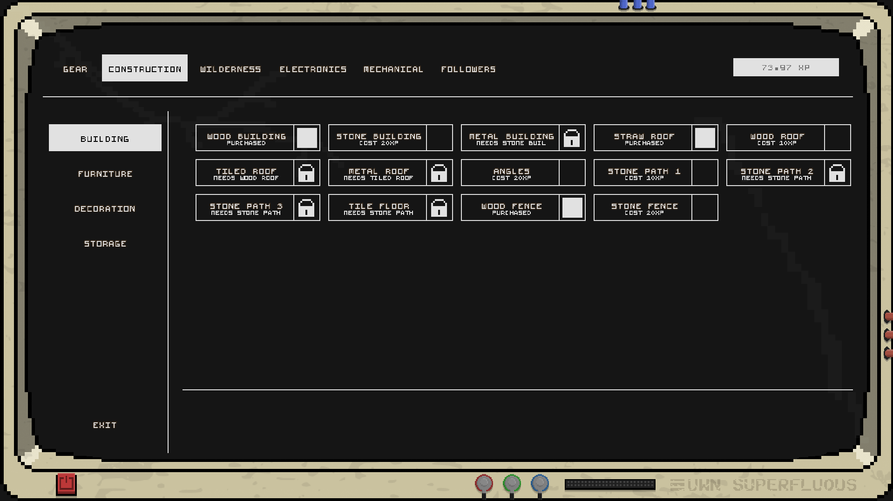
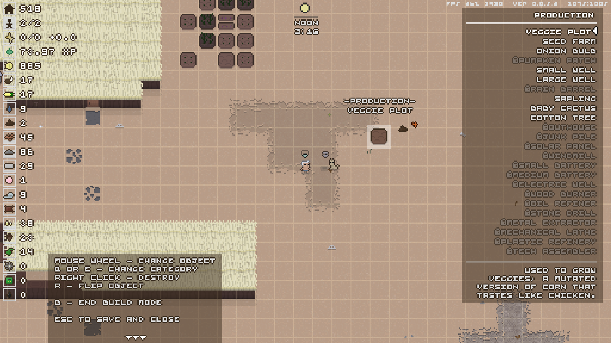

| Home | Sand | Goats |
Sand: A Superfluous Game, feels like a good game buried under bad menus, bad dialogue (or lack thereof), and clunky combat. The art style and general idea of the game seems fun enough, but when you are constantly forced to grind for wood and farm for cotton and veggies, it becomes stale quickly. My main issues with the game stem from the generic story (from what I have seen), baffling menus, and the overall lack of progression.
The story of this game is very lackluster, the depth of the characters is on par with that of the depth of the seas in this game, which presumably have completely dried up. You are introduced to E.D.I.E., A machine that you use to progress through the game. The machine killed someone during its landing (which is brought up constantly as a joke for some reason), and has declared you its slave to help it save the world. Unfortunately, I was left with very little reason to care about this world that I had been tasked with saving. This world is dead, and filled with monsters, you are given no context as to what actually happened, nor is what caused this catastrophe of any importance. All that matters now is that you’re here with this machine that wishes to save the world despite it seeming to have little regard for human life. The game attempts to have its cake and eat it too. It attempts to immerse you in a dead world with small groups of people who are fighting over resources, however this immersion is entirely destroyed by trading posts. Trading posts bring in people from all over who come and buy your resources from you. It’s hard to accept this as a dead world full of gruff survivors when there are so many passers-by that buy goods from you. Outside of your town the world itself is fairly baren, there are occasionally NPCs from other farms and colleges and such, but the NPCs that join your town do not have dialogue, you cannot talk to them. As such there’s no real reason that I found to care about their wellbeing, as you can’t get attached to them because you can’t speak with them, and they are easily replaceable It’s just a shame and a missed opportunity.
The menus nearly made me quit the game twice. The menus in this game are unbearable. The point that nearly had me leave the game entirely was when I got a quest to create a veggie pot. Sounds simple right, just navigate the menus and place a pot. However, this task took 20 minutes of trying to find where the veggie pot even was in the menus. I first had to look through the building menus to find it, to find that it was in the furniture section of all places, which wasn’t what I would initially assume of something called a veggie pot. The next trick was that I hadn’t had the veggie pot unlocked, so I needed to navigate E.D.I.E’s terrible UI to unlock it, and frankly I don’t even know how I unlocked it. I think perhaps the item was unlocked with the clay jar, as I never actually found the veggie pot in the upgrade shop, instead I just clicked on a few things hoping and came back outside to find it now unlocked. This task that should have taken a minute at most had been stretched out to twenty times that by a horrifyingly hard to navigate UI.  
Lastly is the lack of progression in the game. This type of game generally keeps the player engaged by giving them a sense of progression, as if they are achieving something in the world, but here you are left harvesting the same few resources for hours on end. You are pretty much always just farming wood, veggies, and water, with some cattle and chicken farming in there as well if you get bored, but throughout my sessions with this game I really don’t feel like I’ve achieved anything at all. I got to explore very little without suffering an immediate death (the screens for which take a while and aren’t skippable for some reason, leaving you watching monsters kick around your body as you impatiently wait to get back into the action.) Frankly there just didn’t feel like there was enough progression to keep me enticed to keep grinding to get further into the game, E.D.I.E. just throws you menial task after menial task, with large monologues that eventually leave you bored enough to just skip through them whenever you turn a quest in to him.
These are my core issues with the game, yet despite this I do still see some potential at this game’s core. I love the base building concept as well as the exploration mechanic. It’s just a shame that your base feels hollow and the wilderness provides you with little gain and requires you to get gear that takes endless agitating grinding to acquire. I wish I liked this game, I enjoy the art style, I love the music, and I enjoy the concept, it’s just that the game has too many flaws for me to overlook.